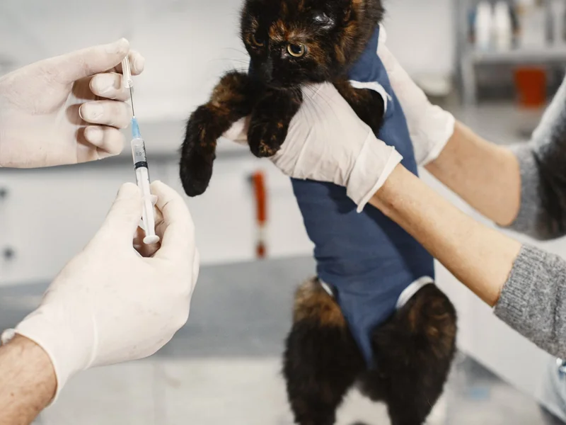
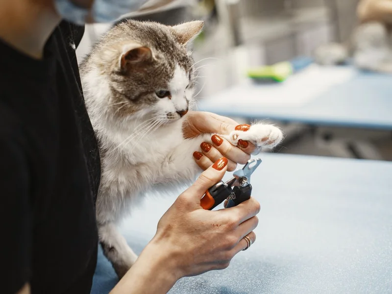
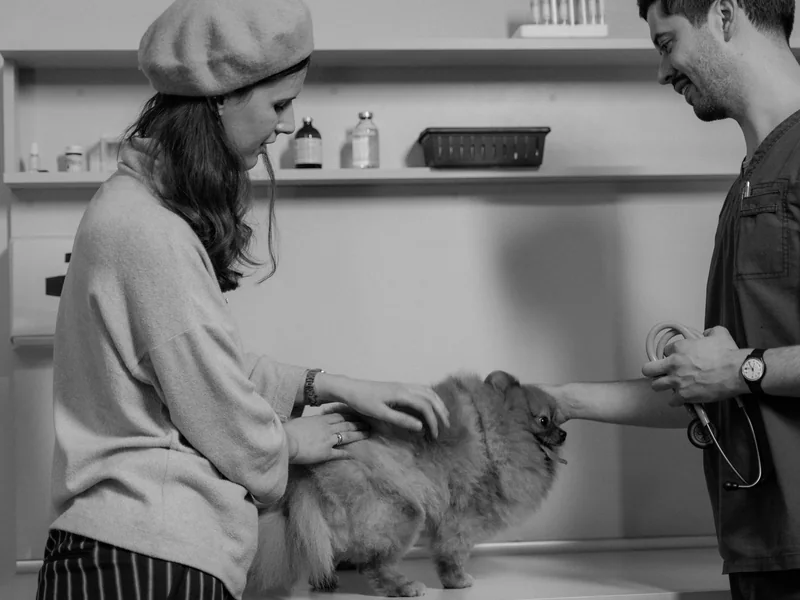

Clinical Upskilling Programs for Practising Veterinarians
Transform everyday clinical cases into confident surgical and diagnostic outcomes. Elevate your practice with bone plating, abdominal organ surgery, Doppler sonography, and emergency critical care.
Intermediate Level Programs (1–5 Years Practice)
Designed for veterinary practitioners ready to expand their in-house procedural capabilities and reduce external referrals.

Soft Tissue Surgery Masterclass
Expand surgical repertoire into gastrointestinal surgery (gastrotomy, enterectomy), splenectomy, cystotomy, diaphragmatic hernia repair, and oncological margins.

Small Animal Orthopaedics (Bone Plating)
Perform fracture management with dynamic compression plates (DCP/LC-DCP), cross-pinning, cerclage wiring, patellar luxation correction, and post-op rehabilitation.

Diagnostic Imaging & Sonography
Systematic sonographic evaluation of adrenal glands, pancreas, biliary system, vascular Doppler, guided biopsy/FNA techniques, and complex thoracic radiology.

Emergency & Critical Care Protocols
Manage acute polytrauma, GDV stabilization, toxicities, acid-base blood gas interpretation, central venous catheterization, and emergency chest tubes.

Anaesthesia & Multimodal Analgesia
Safety protocols for high-risk geriatric and pediatric patients, capnography & invasive arterial BP monitoring, constant rate infusions (CRI), and regional nerve blocks.

Cardiology & Echocardiography
Master transthoracic echocardiography views, Doppler regurgitation velocity grading, feline hypertrophic cardiomyopathy (HCM), and canine MMVD management.

Dentistry & Maxillofacial Surgery
Step-by-step surgical extractions of multi-rooted teeth, mucosal flaps, intraoral dental X-ray positioning, periodontal therapy, and jaw trauma stabilization.

Clinical Dermatology & Otology
Workup of refractory allergic skin disease, video-otoscopic flush and myringotomy for chronic otitis, multidrug-resistant Pseudomonas management, and biopsies.
Bring More Procedures In-House
Upskilling directly expands your clinic's surgical capabilities, increases diagnostic accuracy, and eliminates costly outside referrals.
Retain High-Value Surgical Cases
Perform plating, complex soft-tissue resections, and dental extractions in your own clinic instead of turning clients away.
Reduce Perioperative Complications
Learn modern haemostasis, vascular ligations, precise aseptic draping, and multimodal pain management strategies.
Train Your Junior Staff
Return to your practice equipped with standardized operating room protocols and nursing checklists that enhance your whole team.
Tailored Upskilling Roadmaps for Your Clinic
Not sure whether to prioritize bone plating, Doppler ultrasound, or emergency ICU? Speak with our academic advisors to select modules aligned with your clinic's patient demographic.
Book Free Counselling Session